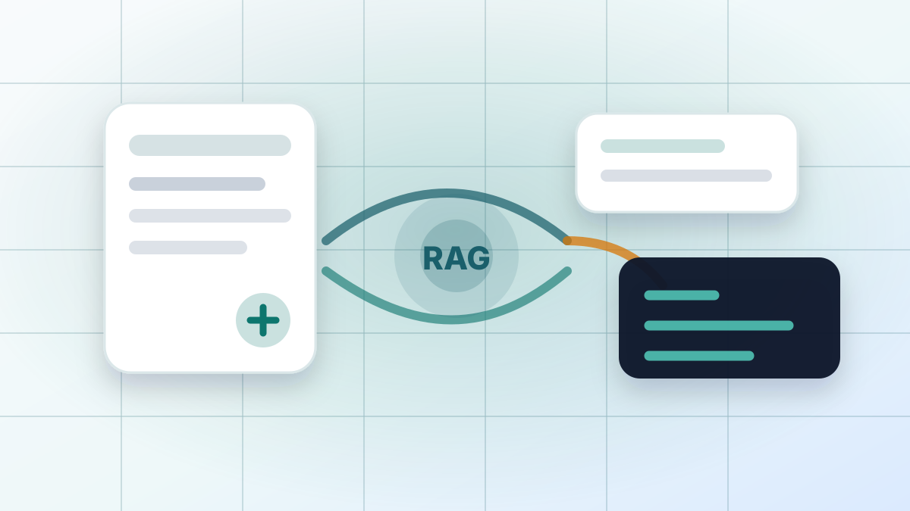
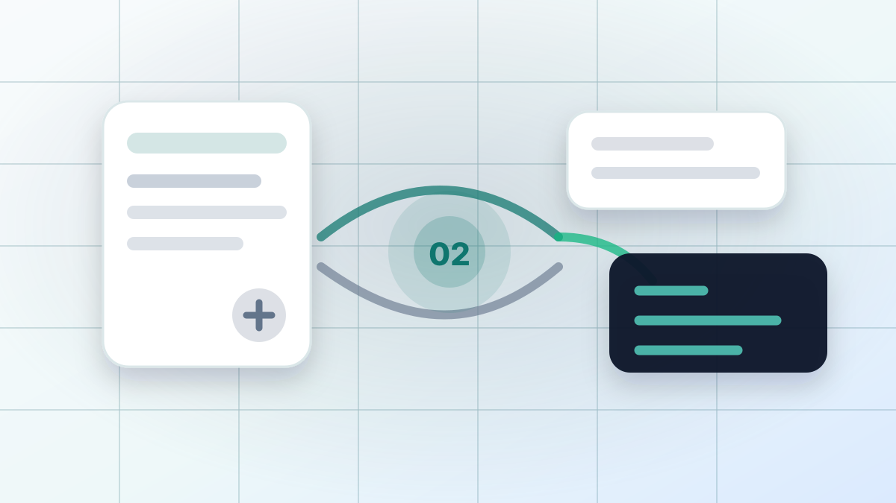
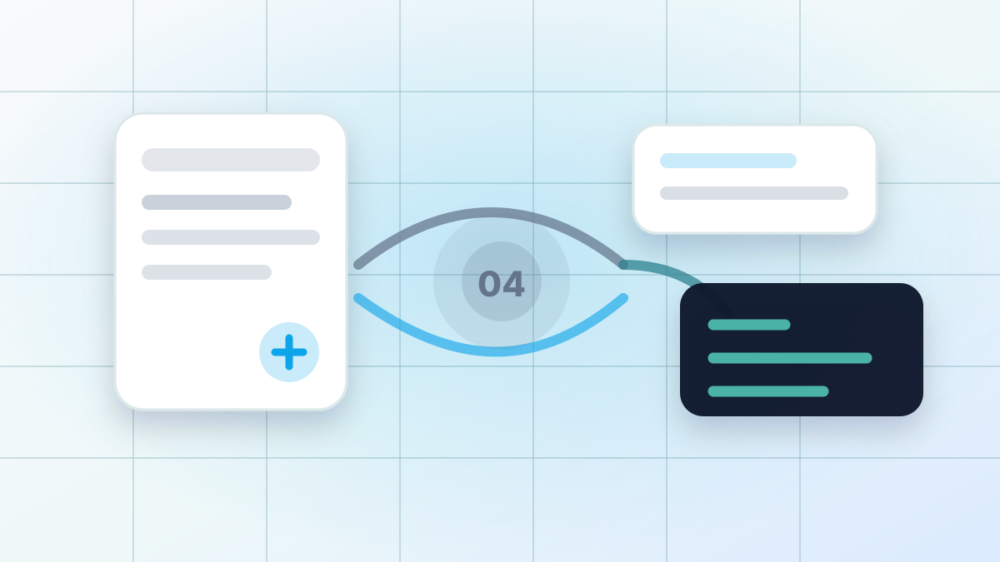
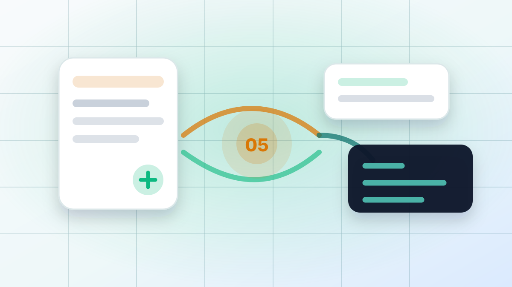
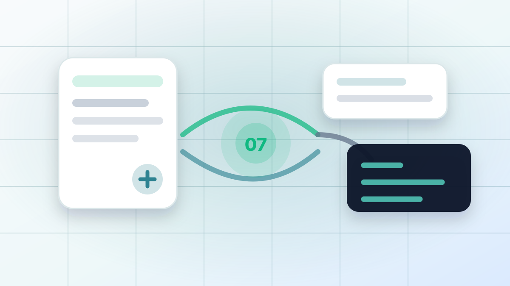
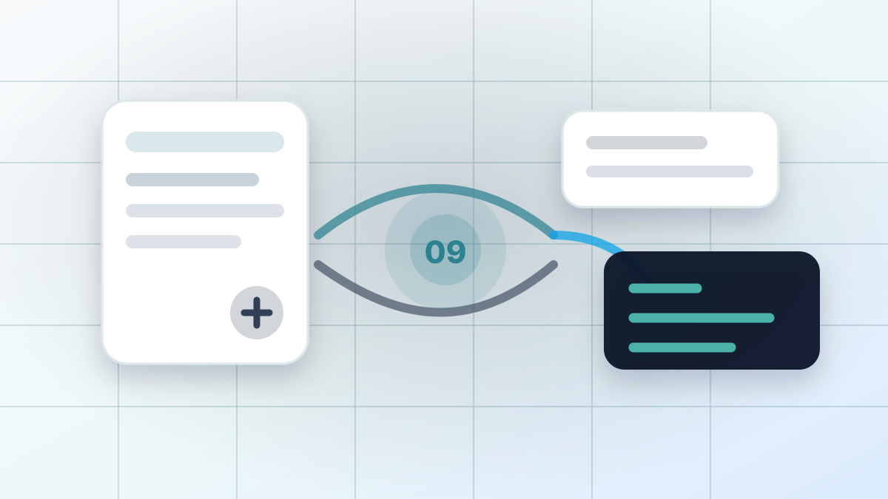
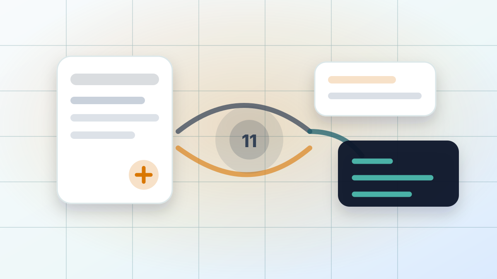
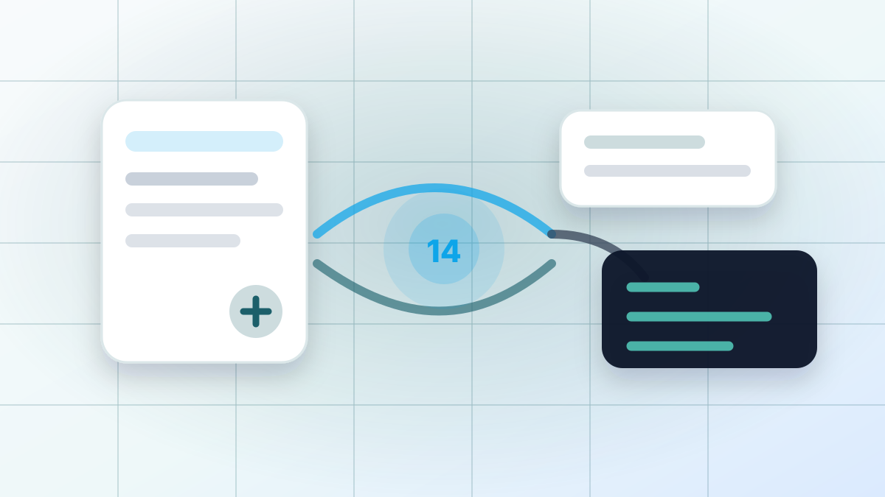

Construye respuestas desde evidencia, no desde memoria.
Un recorrido práctico por un pipeline RAG de club de lectura en .NET con Aspire, Qdrant, MinIO, Gemini u Ollama, y respuestas respaldadas por citas.

La generación aumentada por recuperación conecta un modelo de lenguaje con tu propia evidencia.
Los modelos grandes de lenguaje son excelentes con el lenguaje, pero no conocen automáticamente tus documentos privados, tus datos operativos más recientes ni los pasajes exactos que un usuario necesita para confiar en una respuesta. RAG agrega un paso de recuperación antes de la generación: guardar material fuente, buscar chunks relevantes, pasar esos chunks al modelo y devolver una respuesta con citas.
Eso vuelve necesario RAG cuando la respuesta debe estar basada en un corpus privado o cambiante: políticas, tickets, libros, registros de clientes, manuales, notas de investigación o bases internas de conocimiento. El modelo escribe la respuesta, pero la capa de recuperación decide qué evidencia puede usar.
En la práctica, las partes difíciles no son solo la selección del modelo. Un sistema RAG profesional debe hacer la recuperación inspeccionable, distinguir evidencia primaria de material de apoyo generado, evaluar el comportamiento de respuestas contra preguntas conocidas y poner límites alrededor de costo, latencia y entrada de usuario.
Resumen de la serie
Esta guía explica el proyecto de ejemplo actual como una serie respaldada por código fuente. Está escrita para ingenieros que ya conocen C# básico y ASP.NET Core, pero todavía están aprendiendo cómo se ensamblan y evalúan los sistemas RAG modernos.
El objetivo no es presentar una arquitectura perfecta de producción. El objetivo es mostrar cómo se conectan las piezas, dónde están los límites y por qué esos límites importan al construir un sistema de ingesta de documentos y preguntas-respuestas en .NET.
Workflow del proyecto
El proyecto implementa este workflow:
1. Upload PDF/TXT
2. Store original file in object storage
3. Track metadata in SQLite
4. Worker extracts text
5. Generate book-club literary artifacts
6. Chunk source text and artifacts
7. Generate embeddings
8. Store vectors and citation payloads in Qdrant
9. Retrieve relevant chunks for a question
10. Send chunks to an LLM
11. Return answer + citationsEn alto nivel, el sistema tiene seis responsabilidades:
- Orquestación: Aspire inicia la API, worker, Qdrant, MinIO y opcionalmente Ollama.
- Interacción de usuario: La API hospeda la UI de carga y chat.
- Estado durable: SQLite registra estado de documentos; MinIO guarda originales; Qdrant guarda vectores.
- Ingesta: El worker convierte archivos en chunks buscables.
- Respuesta: El servicio de preguntas recupera evidencia y pide a un LLM que responda desde esa evidencia.
- Evaluación y operaciones: Pruebas, diagnósticos, procedencia, límites de solicitud, logging y controles de borrar/reindexar hacen que el ejemplo sea inspeccionable en vez de opaco.
La decisión de diseño más importante es que la API y el worker no conocen formatos de solicitud específicos de modelos. Dependen de interfaces como IEmbeddingProvider, IChatCompletionProvider e IVectorStore. La misma idea ahora aplica dentro de la recuperación: estimación de tokens, reranking, descubrimiento de trabajo de ingesta, gestión documental, diagnósticos y evaluación tienen puntos explícitos para que el ejemplo enseñe las decisiones de ingeniería detrás de RAG, no solo el flujo feliz.
Esta guía se mantiene como la fuente narrativa de verdad para el proyecto de aprendizaje RAGPipeline. Sigue el código fuente actual directamente, incluyendo diagnósticos de recuperación, procedencia de artefactos generados, etiquetado de citas, límites de solicitud, pruebas de evaluación y puntos operativos.
Los hábitos de ingeniería detrás de sistemas RAG creíbles.
Los capítulos técnicos recorren la implementación, pero el proyecto también busca mostrar cómo piensan ingenieros con experiencia sobre RAG: preservar material fuente, hacer explícitos los artefactos derivados, inspeccionar recuperación, evaluar comportamiento y mantener visibles los límites operativos.
- Guardar documentos originales separados de vectores.
- Registrar la ingesta como estado durable.
- Mantener la ingesta larga fuera de rutas request/response.
- Usar abstracciones neutrales al proveedor para servicios de IA.
- Crear embeddings de metadatos generados, no solo texto fuente crudo, y preservar su procedencia.
- Ajustar la recuperación según los tipos de preguntas esperados.
- Combinar búsqueda vectorial con recuperación estructurada y fallback simple por nombre exacto.
- Hacer la recuperación inspeccionable con diagnósticos y razones de ranking.
- Devolver citas que distinguen chunks fuente de ayudas de recuperación generadas.
- Mostrar fallas y progreso de ingesta en la UI.
- Usar límites para tamaño de pregunta, documentos seleccionados, expansión de recuperación y timeouts de proveedores.
- Probar comportamiento RAG con evaluaciones deterministas de preguntas doradas.
Qué todavía necesita más rigor antes de un despliegue real.
Este ejemplo es un proyecto didáctico con puntos de extensión con forma de producción. Es útil para aprender arquitectura, comportamiento de recuperación y hábitos de evaluación, pero por sí solo no es una plantilla segura ni escalable de despliegue.
- Reemplazar actualizaciones ad hoc de esquema SQLite con migraciones.
- Agregar autenticación, autorización, auditoría y política de retención.
- Soportar almacenamiento de objetos en la nube directamente.
- Agregar implementaciones de proveedores para Azure OpenAI, Bedrock, Vertex AI u OpenAI.
- Agregar observabilidad más profunda sobre uso de tokens, latencia, errores de proveedor, calidad de recuperación y drift de evaluación.
- Mejorar calidad de extracción de PDF.
- Reemplazar la fuente de trabajo basada en base de datos por infraestructura de colas para despliegues multi-worker.
- Agregar tokenización compatible con proveedor, reranking opcional basado en modelo y verificaciones de fidelidad de citas.
Topología de la solución
Layout del proyecto y por qué la ingesta corre fuera de la ruta de solicitudes.

Capítulo 2Aspire como plano de control local
RAG.AppHost/AppHost.cs define el entorno local.
Capítulo 3Configuración y contratos compartidos
Configuración e interfaces que mantienen el código del workflow neutral al proveedor.

Capítulo 4Metadatos con SQLite y EF Core
Metadatos SQLite para estado, progreso y ciclo de vida de documentos.

Capítulo 5API e interfaz de carga
El endpoint de carga está en RAG.Api/Program.cs:
Capítulo 6Almacenamiento de objetos con MinIO
Los archivos originales se guardan en almacenamiento de objetos antes de indexarlos. La implementación local está en RAG.Core/Services/S3ObjectStorage.cs.

Capítulo 7Pipeline de ingesta del worker
RAG.Worker/Worker.cs es un servicio en segundo plano que consulta periódicamente y pide a IDocumentIngestionService que procese documentos pendientes.
 Capítulo 8
Capítulo 8Extracción y división de texto en chunks
La extracción de texto vive en RAG.Core/Services/TextExtractor.cs.

Capítulo 9Artefactos literarios
Los perfiles literarios generados mejoran la recuperación amplia para club de lectura sin fingir que son evidencia fuente.
Capítulo 10Abstracciones de proveedores de IA
El proyecto soporta Ollama y Gemini mediante implementaciones de proveedores:

Capítulo 11Almacenamiento vectorial con Qdrant
RAG.Core/Services/QdrantVectorStore.cs controla la interacción con Qdrant.
Capítulo 12Flujo de preguntas y estrategia de recuperación
Expansión de consultas, reranking, diagnósticos y límites de solicitud en la ruta de preguntas.
Capítulo 13Prompts y citas
Los prompts de proveedor convierten evidencia seleccionada en respuestas con citas inspeccionables.

Capítulo 14Pruebas del pipeline
Las pruebas son intencionalmente enfocadas, no exhaustivas.
Capítulo 15Notas de desarrollo local
Comandos y URLs locales para Gemini, Ollama, Aspire, Qdrant y MinIO.